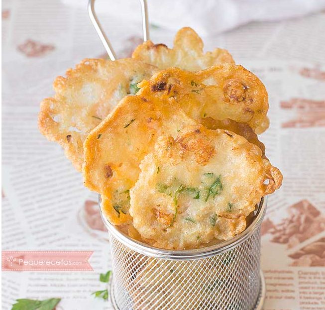
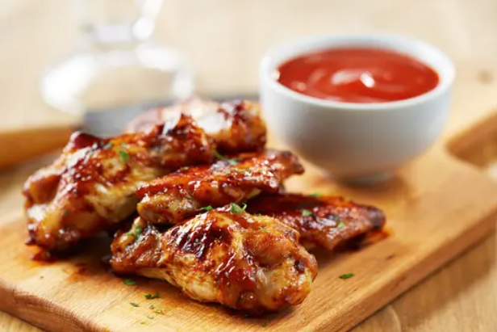
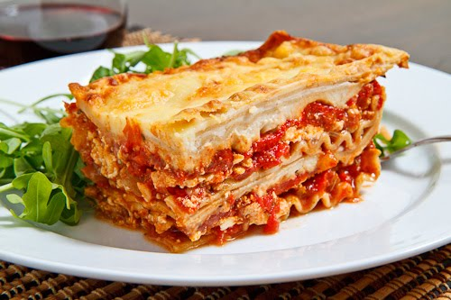

Tortillitas or shrimp pancakes is one of the star dishes of Cadiz gastronomy,
it seems that its origin is in San Fernando (Cádiz).

Recipe
-
Ingredients
- 100g shrimp
- 100g wheat flour
- 50g chickpea flour
- 1 glass and a half with water
- 1/2 teaspoon salt
- 1 chive
- Perejil fresco
- Fresh parsley
-
Preparation
- Mix the wheat flour and the chickpea flour.
- Chop the chives into very small pieces.
- Chop the parsley into small pieces.
- In a bowl mix the flours with the chives and two tablespoons of the
parsley chopped.
- Add salt, shrimp and water, mix well until you get a dough
rather liquid but without any lump.
- We take a large frying pan pour olive oil, more or less a finger of
height.
- We put to heat the pan; once the oil is very hot,
add two or three tablespoons of dough to the pan (those that enter
us without that the tortillas touch) we let cook on the one hand and
when it starts to brown, we turn to the other side to brown it too.
- As the shrimp tortillas cook, we leave them on absorbent kitchen paper
in this way most of the fat will stay on paper.
▲ Go up
The BBW wings is one of the most enjoyable dishes to eat.
In fact, they are a good option to delight our palates on a special occasion
at family or a celebration with friends.
In U.S.A, they are known as Buffalo wings and the traditional recipe
consists of two ingredients: a hot sauce (based on vinegar and
cayenne) and margarine or butter.

Recipe
-
Ingredients
- 5 cloves of garlic.
- 1 kg of chicken wings.
- 1 white onion (60 g).
- Salt and pepper.
- 1/4 cup of water (60 ml).
- Olive oil.
- 60 ml of bee honey.
- 2 tablespoons of mustard (20 g).
- 1 tablespoon of butter (10 g).
- 1/4 cup of tomato sauce (125 g).
- 2 tablespoons of brown sugar (10 g).
-
Preparation
- Chop the onion and garlic cloves very finely.
- In a frying pan, place the butter and a little olive oil, if desired. Pour the
chopped
onion
and garlic and sauté over medium heat.
- Once the onion and garlic are golden brown, add all the other ingredients,
except
for
the
wings, salt and pepper. Stir constantly.
- Rectify the flavor by adding salt and pepper until they are in a good point.
- Cook this preparation for 20 minutes until the sauce reduces and thickens.
- Prepare a baking sheet and organize the chicken wings on it. Add a little salt
and
pepper on
both sides.
- Using a brush, add the BBQ sauce around each wing. Make sure you don't use all
the
sauce
as
you will need it later.
- In the oven preheated to 180ºC, place the tray with the wings and bake for
approximately
20
minutes.
- Then, add barbecue sauce on one side and flip the wings to add more sauce and
bake
for
10
more minutes.
- Flip it over again and add another layer of BBQ sauce.
- Put it back in the oven for another 5 minutes and ... that's it!
▲ Go up
It is a traditional dish of Ecuadorian cuisine.
It is a light stew prepared with meat and entrails of lamb,
including intestines, liver, lung, tongue, rumen, etc.
Usually served with fried lamb blood, avocado and onion rings.

Recipe
-
Ingredients
- 1/2 liters of milk.
- 2 1/2 pounds of potato chola.
- 1/4 liter of sheep blood.
- 1 medium tomato.
- 1/4 sheep belly with its guts.
- 4 tablespoons of garlic.
- 4 tablespoons oregano.
- 1 ounce of colored butter.
- 2 stalks of white onion.
- 3 paiteña onions.
- 1/2 bundle of coriander.
- 1 avocado.
-
Preparation
- Wash the small (belly and guts).
- Cook the belly and casings in plenty of water with a paiteńa onion, two garlics
and
a
branch
of white onion, until it is very soft.
- Reserve the cooking water.
- Chop the guts and belly into small squares and set aside.
- Peel and chop the potatoes.
- Chop the paiteña onion into thin slices, reserve half and the rest chop very
fine.
- Also, chop the garlic and white onion very finely.
- Make a rehash with the colored butter, one part of the white onion and one part
of
the
garlic. Add the oregano.
- add part of the potatoes, the belly and the casings.
- Add the lamb's cooking water and cook until the potatoes are soft.
- Add milk and potatoes until you get a creamy texture.
- To taste, add salt, pepper and very fine coriander.
- With the fine paiteña onion, the white onion, the garlic, the oregano, salt and
pepper,
make
a rehash to prepare the blood
- Serve very hot and serve with a separate plate with the blood, the avocado, the
tanned
onion
and the tomato.
▲ Go up
It is a type of pasta that is served in sheets.
It is a dish of Italian origin.

Recipe
-
Ingredients
- 1lb of pasta for lasagna (1/2 kg).
- 4 liters of water.
- 1 tablespoon of oil.
- 1 tablespoon of salt or chicken bouillon powder.
- 2 lbs of ground beef (1/2 kg).
- 1 medium onion, chopped.
- 2 minced garlic cloves.
- 1 tablespoon of olive oil.
- 2 medium cans of spaghetti sauce.
- 1/2 cup of water or white wine.
- 15 oz of ricotta or cream cheese.
- 1/2 cup of grated Parmesan cheese.
- 1 cup of cheese for quesadilllas or mozarella.
- 1 tablespoon of dried basil (basil) or oregano.
- Salt and pepper to taste.
-
Preparation
- We heat the water (4 liters) with a tablespoon of oil, we can add salt.
- When it starts to boil, add the pasta sheets and mix just a little to separate
them.
The
water should cover the pasta.
- Cook until pasta is smooth.
- While you can chop the vegetables that we are going to use for the filling.
- After this time, we drain and separate.
- We preheat the oven to 375F or 190 C.
- We heat a frying pan,add olive oil and fry the onion and garlic, until the onion
is
transparent.
- Incorporate the ground meat and fry.
- Add the half cup of wine or water, a can of the spaghetti sauce, the basil or
oregano,
salt,
pepper and lower the heat, we boil. We remove from the fire.
- Apart, we grease a rectangular pan, add half a can of spaghetti sauce to cover
the
bottom of
the mold.
- We arrange the lassagna sheets, making layers.
- We place a layer of lassagna, a part of the mixture of meat, ricotta cheese and
Parmesan
cheese.
- We repeat until we finish with the pasta.
- On top of the last layer, we add spaghetti sauce.
- Cover with aluminum foil and put in the oven for thirty minutes.
- We remove from the oven and cover with quesadilla cheese and add any cheese that
is
left
over.
- Bake, uncovered, for five minutes or until the cheese is gratin or melts on top.
- We remove from the oven and let stand for five minutes before serving.
▲ Go up